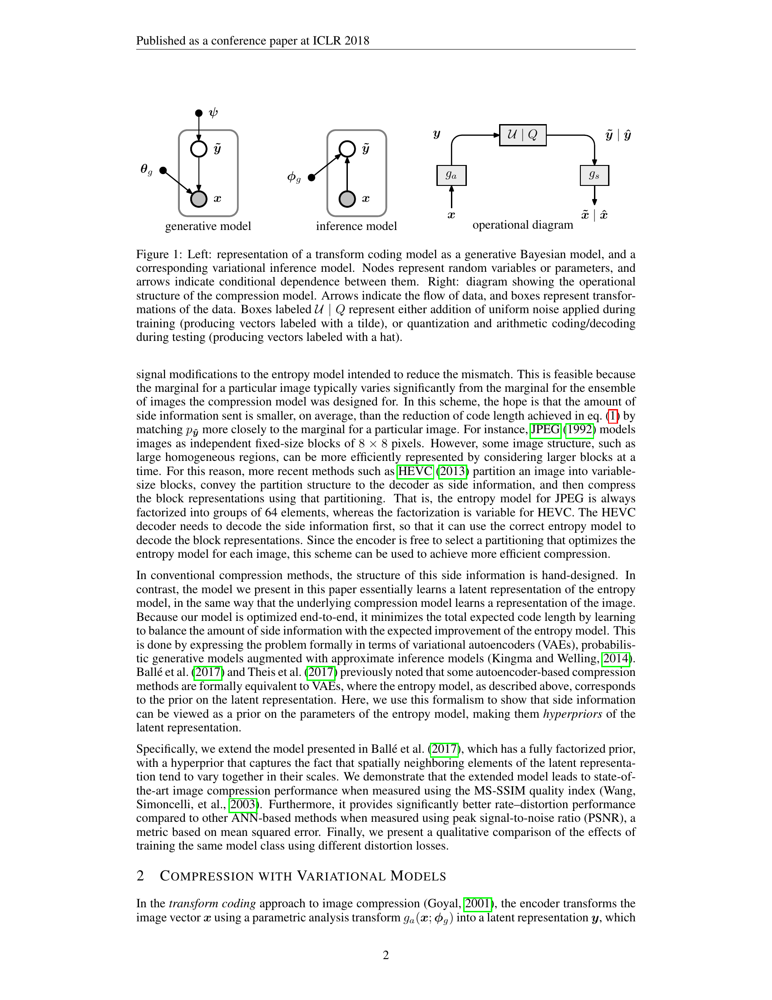
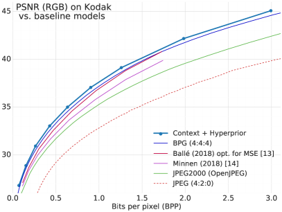
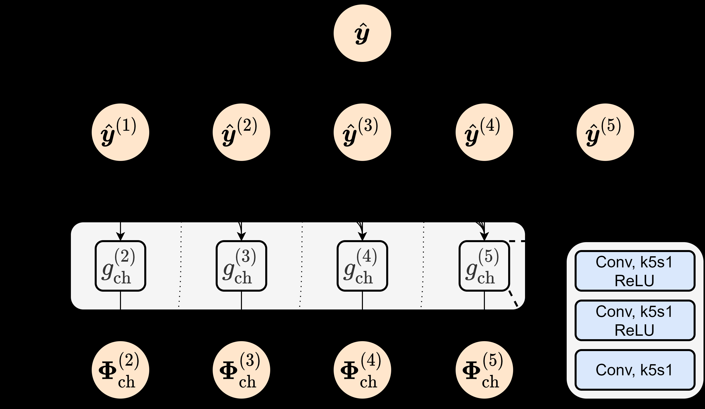
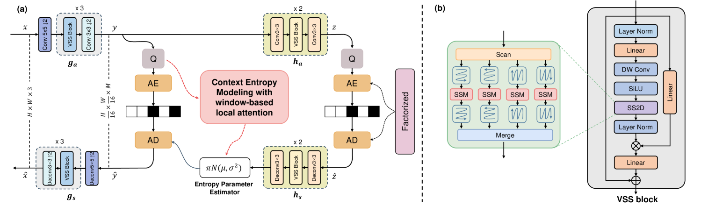

端到端学习式图像压缩的标准框架（Ballé 2016/2017）由四步组成：分析变换 g_a 将图像编码为潜在表示 y，量化器将 y 离散化为 ŷ，熵编码器将 ŷ 压缩为比特流，合成变换 g_s 将 ŷ 解码为重建图像 x̂。
训练目标是最小化 Rate-Distortion 损失 \(L = R + \lambda D\)。其中 \(D\)（失真）由分析/合成变换网络决定，而 \(R\)（比特率）由熵模型决定。具体地，\(R = -\log_2 p(\hat{y})\)，即比特率等于潜在表示在熵模型下的负对数似然。
这里有一个容易被忽略的细节：熵模型并不直接改变重建图像，它改变的是算术编码器给每个 latent 符号分配的码长。如果概率估计偏低，符号会被分配更长的码字；如果概率估计贴近真实分布，平均码长接近 Shannon 下界。因此，熵模型的改进通常表现为 BD-Rate 下降，而非单张图视觉效果的显著变化。
真实 latent 分布记为 \(q(\hat{y})\)，模型估计分布记为 \(p(\hat{y})\)。平均码长对应交叉熵 \(H(q,p)=H(q)+D_{KL}(q\Vert p)\)。其中 \(H(q)\) 是数据本身无法绕开的熵，真正可优化的是 KL 项。所有后续工作，本质上都在减少这个概率模型错配。
问题在于：量化后的潜在表示 ŷ 的元素之间并非独立。相邻空间位置存在强相关性，不同通道之间也存在统计依赖。如何建模这些依赖，是熵模型演化的核心线索。
最简单的假设：ŷ 的各元素独立同分布。每个元素用一个非参数概率分布（由卷积网络预测）建模。这是一个粗略但高效的起点——完全并行，解码速度极快。
代价显而易见：latent 元素之间的空间相关性被完全忽略，导致熵估计偏高，比特率浪费严重。

Ballé 的核心创新：引入第二层 VAE，也就是超先验（Hyperprior）。在分析变换 \(g_a\) 之后，再接一个超分析变换 \(h_a\)，将潜在表示 \(y\) 压缩为超先验 \(z\)。\(z\) 作为边信息单独编码传输。
在解码端，超合成变换 \(h_s\) 从 \(z\) 预测每个潜在元素的高斯分布参数（\(\sigma\)），从而将 \(p(y_i)\) 从固定先验提升为条件先验 \(p(y_i \mid z)\)。
这一架构引出了一个极其优雅的层次化概率模型：超先验 \(z\) 捕获全局的、粗粒度的空间依赖，例如“这片区域纹理丰富，那片区域平坦”，而主 latent \(y\) 在给定 \(z\) 的条件下近似独立。
直觉上，发送 \(z\) 会增加码率。但如果 \(z\) 能显著降低 \(y\) 的不确定性，总代价 \(R_y + R_z\) 反而下降。这和视频编码里先传运动信息、再传残差的思想相似：边信息本身花费比特，但它让主体信号更容易编码。

Minnen et al.（NeurIPS 2018）的洞察：超先验捕获全局依赖，但局部依赖仍然被忽略。解决方案：在超先验基础上加入空间自回归（Autoregressive）上下文。
概率模型从 \(p(y_i \mid z)\) 提升为 \(p(y_i \mid y_{ 同时，将单高斯似然替换为离散化高斯混合模型（GMM），进一步提高了概率估计的灵活性。GMM 的意义在于允许 latent 分布呈现多峰结构，而不是强行用一个均值和尺度解释所有局部模式。 空间 AR 模型利用的是“已经解码的邻居”。在自然图像中，边缘、纹理和局部重复结构会让相邻 latent 呈现强条件依赖。给定左上区域后，当前符号的不确定性下降，码长随之下降。这就是 AR 能显著提升 RD 性能的根本原因。 AR 解码是严格串行的：对于 H×W 大小的 latent，需要 H×W 步顺序解码。在实际分辨率下，这意味着极慢的解码速度。这个问题成为了后续 5 年的核心技术驱动力。AR 上下文的收益来自哪里
核心洞察：latent 的通道间相关性远强于空间相关性。将 AR 从像素级改为通道级——先解码前面的通道组，再用于预测后面的通道组。
通道数（通常 192 或 320）远小于 H×W，因此解码步数从 H×W 降低到 C。速度大幅提升，RD 性能损失极小。
更激进的洞察：空间上下文不一定需要严格的光栅扫描顺序。将空间位置分为"棋盘格"两组——先解码所有"黑格"，再并行解码所有"白格"。
两组之间只需两步（而非 H×W 步），解码速度提升数倍。RD 性能接近完整 AR，是压缩实用化的关键技术。

将通道分组与空间上下文结合，利用 latent 中能量聚集的特性——前面的通道包含更多信息，后面的通道信息较少。不均匀分组策略：前面通道组少但包含更多上下文，后面通道组多但依赖更少。
在 VVC 4:4:4 配置下 BD-Rate 降低 7.88%。ELIC 的本质是承认 latent 通道并不等价：高能量通道应被更细致地建模，低能量通道可以更粗略地并行处理。
Phase 4–6 解决的是同一个问题：如何减少 AR 的串行依赖步数。三条路径对应三个维度——通道维度（Cheng）、空间维度（Checkerboard）、空间-通道联合维度（ELIC）。每条路径都保留了大量上下文信息，同时将解码步数从 O(HW) 降低到 O(C) 或 O(2)。
Entroformer（2022）和 Contextformer（ECCV 2022）将多头注意力机制引入熵建模。核心思想：注意力天然可以捕获任意距离的依赖，不受 AR 扫描顺序的限制。
Contextformer 将标准多头注意力推广为空间-通道联合注意力，同时建模两种依赖。
注意力机制的 O(n²) 复杂度是硬伤。对于高分辨率图像，latent 的空间维度 n 可能很大，注意力的计算和存储开销成为瓶颈。
混合架构：CNN 处理局部特征（高效），Transformer 捕获全局依赖（精准）。这种设计平衡了局部建模与全局注意力。
从写作线索上看，Transformer 进入熵模型并不是为了替代所有卷积，而是为了解决卷积上下文模型的感受野上限。局部 CNN 能快速捕获边缘、纹理、重复块；全局注意力则补足远距离结构依赖，例如天空大面积平滑区域、建筑立面重复纹理、前景物体与背景之间的统计关系。
| 模块 | 擅长建模 | 主要代价 | 适合位置 |
|---|---|---|---|
| CNN | 局部连续性、边缘、纹理 | 长程依赖弱 | analysis/synthesis transform、局部 entropy parameters |
| Transformer | 远距离依赖、全局结构 | O(n²) 计算与显存 | 低分辨率 latent、窗口化上下文 |
| Hybrid | 局部与全局折中 | 结构复杂、调参成本高 | 实用神经 codec 的主干 |

2024–2025 年最活跃的新兴方向。状态空间模型（SSM）提供了线性复杂度的全局感受野，理论上兼具 CNN 的高效和 Transformer 的全局建模能力。
MambaIC 相比 CNN-Transformer 混合架构降低了 63.9% 的计算量，同时 RD 性能有所提升。CMIC 进一步引入内容感知机制，根据图像局部复杂度自适应调整建模粒度。
SSM 路线的关键不是“更换一个 backbone”这么简单，而是给熵模型提供一种新的序列化方式：把二维 latent 展平成若干扫描序列，通过选择性状态更新捕获长程依赖。它避免了注意力矩阵的二次复杂度，又保留了跨区域信息传递能力。
全新思路：通过可学习字典（codebook）从训练集提取典型结构，辅助熵模型预测。不再依赖参数化的概率分布假设，而是用数据驱动的方式直接从数据中学习先验知识。
字典式熵模型可以理解为“把常见 latent 模式显式存起来”。当局部 latent 与某些字典原型接近时，模型可以借助原型给出更尖锐的概率分布。这条路线与传统 GMM 不同：GMM 假设概率分布的形状，字典方法更接近检索式先验或记忆增强模型。
以多尺度编码顺序（1/4 → 1/2 → 1×）高效建模长程依赖。分层渐进式上下文：不同层级的 latent 使用不同粒度的上下文。
HPCM-1B 将模型扩展到 10 亿参数，发现了压缩领域的 Scaling Law：测试损失与模型规模/训练计算之间存在可预测的幂律关系。这是压缩领域首次验证 Scaling Law 的存在。
更准确地说，HPCM-1B 不是单纯“模型更大”，而是把 learned image compression 从小模型架构搜索推进到 scaling-law 实验范式。它说明 entropy/context model 的容量可能仍是 RD 性能瓶颈。
这对研究策略的影响很直接：过去的论文常以模块创新为主，例如换一个 context model、换一个 prior、换一种分组顺序；Scaling Law 视角则要求我们同时报告模型规模、训练计算、数据规模和测试损失之间的关系。压缩模型开始接近基础模型研究范式。
Scaling Law 并不自动意味着“越大越好”。压缩系统还受编码/解码延迟、内存、算术编码吞吐、设备端部署约束限制。HPCM-1B 的意义主要是证明容量仍能换取 RD 收益，而不是证明 1B 参数 codec 已经适合实际部署。
| Scaling 方向 | 被放大的模块 | 优化目标 | 意义 |
|---|---|---|---|
| HPCM-1B | continuous latent context model | RD / entropy modeling | 压缩模型存在规模律可能 |
| AR-VFM Compression | visual token prior | token entropy | 离散 token 先验可复用基础模型 |
| OneDC / StableCodec | generative decoder | perceptual quality | 感知质量依赖生成先验规模 |
| 方法 | 年份 | 上下文类型 | 并行度 | 复杂度 | 关键创新 |
|---|---|---|---|---|---|
| Factorized Prior | 2017 | 无（独立） | 全并行 | O(1) | 基线 |
| Scale Hyperprior | 2018 | 全局尺度 | 全并行 | O(n) | 超先验边信息 |
| Joint AR+HP | 2018 | 像素级 AR | 串行 | O(n²) | GMM 似然 + AR |
| Channel-Conditional | 2020 | 通道级 AR | 半并行 | O(C·n) | 通道替代像素 |
| Checkerboard | 2021 | 棋盘格 | 2 步并行 | O(n) | 并行化解码 |
| ELIC | 2022 | 不均匀分组 | 分组并行 | O(n) | 能量感知分组 |
| Transformer | 2022 | 全局注意力 | 全并行 | O(n²) | 长程依赖 |
| TCM 混合 | 2023 | 局部+全局 | 全并行 | O(n²) | CNN+Transformer |
| MambaIC | 2025 | SSM | 全并行 | O(n) | 线性复杂度全局 |
| Dictionary | 2025 | 数据驱动 | 全并行 | O(n) | 可学习字典 |
| HPCM-1B | 2025 | 分层渐进 | 分层并行 | O(n) | Scaling Law |
如果把所有方法都写成“模型更强”，这条线会迅速变成论文罗列。更清晰的方式是把它们放进同一个账本：decoder 原本不知道什么，论文让它多知道了什么，以及这份确定性用什么买来。
| 阶段 | decoder 的盲区 | 获得的信息 | 付出的代价 |
|---|---|---|---|
| Factorized Prior | 不知道 latent 的局部尺度和相关性 | 只有全局独立先验 | 码率浪费 |
| Hyperprior | 不知道哪些位置更不确定 | side stream 给出尺度/不确定性提示 | 额外 side bits |
| AR + Hyperprior | 不知道当前符号与已解码邻域的条件关系 | 局部已解码 context | decoder-side latency |
| Checkerboard / ELIC | 不知道哪些 context 该先用、如何分组用 | 重排后的空间-通道上下文 | 结构复杂度和调参成本 |
| Transformer | 不知道长程区域之间的统计依赖 | 全局注意力上下文 | O(n²) 计算/显存 |
| Mamba / SSM | 需要低成本长程依赖 | 线性复杂度状态传递 | 扫描顺序和状态设计成本 |
| Dictionary / Memory Prior | 不知道当前 latent 是否接近训练集常见模式 | 检索式/记忆式先验 | 字典维护和泛化风险 |
| HPCM-1B | 上下文模型容量不足 | 更大规模分层上下文模型 | 训练计算、内存、部署成本 |
「AR 的速度问题贯穿整个演化。」
「先验建模的抽象层次不断提升。」
「并行化是实用化的关键。」
「Scaling Law 的出现改变了游戏规则。」
基于 cshw2021 的 Learned-Image-Video-Compression 索引，2024 之后熵模型不再只是沿着“更强 context model”单线前进，而是出现几条并行分叉。它们共同回答同一个问题：在 decoder 端，哪些信息值得等待，哪些信息值得额外传，哪些信息可以从训练集或内容结构中检索出来。
| 分叉 | 代表论文 | 核心问题 | 与主线关系 |
|---|---|---|---|
| 多参考上下文 | MLIC, Diverse Contexts | 一个 context 是否足够，能否从多个已解码参考中估计概率 | Minnen/ELIC 的自然延伸 |
| 快速似然模型 | FlashGMM, Gaussian-Laplacian-Logistic Mixture | GMM 似然足够灵活，但计算与熵编码如何变快 | 回到 Minnen 的 GMM 似然本身做工程化 |
| 内容自适应 prior | CMIC, Switchable Hyperprior, Local-to-Global Cross-Component Prior | 不同图像区域是否应该使用不同 prior/context 路径 | 把 ELIC 的固定分组推进到内容自适应 |
| 记忆增强 prior | Dictionary-based Entropy Model | 训练集中常见 latent 模式能否显式作为概率先验 | 从参数化概率走向检索式先验 |
| 重审 latent 本身 | Rethinking Latent Variable in Learned Image Compression | latent 功能是否只是承载重建信息，还是同时承担可编码性结构 | 把熵模型问题反推到表示学习问题 |
| 规模化上下文模型 | HPCM / NVC-1B | 压缩模型是否存在可预测 scaling law | 从模块创新转向模型规模与训练计算 |
只看标题很容易把所有论文归成“又一个 codec”。更有用的筛法是问：这篇论文减少了 decoder 的哪种不确定性？它用什么付费？是 side bits、latency、结构复杂度、训练数据记忆，还是模型规模？只有能回答这两个问题的工作，才值得纳入熵模型主线。
| 优先级 | 论文/方向 | 为什么值得读 | 预期产出 |
|---|---|---|---|
| 高 | MLIC / Multi-Reference Entropy Model | 把 context 从单一路径扩展为多参考，是 Minnen → ELIC 之后最自然的主线延伸 | 补一节“多参考上下文” |
| 高 | CMIC / Content-Aware Mamba | 直接延续 MambaIC，验证内容自适应 SSM 是否能成为新一代高效 entropy model | 补充 SSM 熵模型专题 |
| 高 | FlashGMM | 回到 GMM 似然本身，关注熵编码速度与复杂度，是“老范式工程化”的代表 | 补充 GMM 到快速似然建模线索 |
| 高 | HPCM / NVC-1B | 把压缩研究推向 scaling law，需要单篇深读 | 独立论文精读 + scaling law 小综述 |
| 中 | Dictionary-based Entropy Model | 引入检索式/记忆式先验，可能连接 codebook、tokenizer 与 compression prior | 补一节“记忆增强熵模型” |
| 中 | Switchable Hyperprior / Local-to-Global Prior | 把 hyperprior 从固定 side information 推进到内容自适应和跨组件先验 | 补充“自适应 prior”支线 |
| 中 | C-CTX / Cubic-Checkerboard | 继续推进 checkerboard context 的空间组织方式，适合接在 ELIC 后面 | checkerboard 系列小综述 |